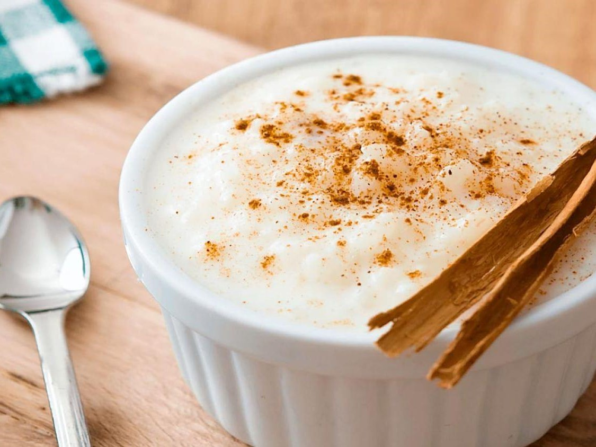

Canjica

Ingredientes
- 500 g de canjica branca
- 1 lata de leite condensado
- 1 vidro de leite de coco
- 50 g de coco ralado úmido e adoçado
- 1 litro de leite
- 8 colheres (sopa) de açúcar
- canela em pó a gosto
Modo de preparo
- Lavar a canjica em água corrente.
- Deixar de molho por aproximadamente 4 horas com o açúcar
- Cozinhar na panela de pressão com 2 litros de água por, aproximadamente, 20 minutos ou até que esteja macia.
- Coloque em outra panela se necessário maior, acrescente o leite, o leite de coco, o leite condensado e o coco ralado.
- Deixe ferver por 10 minutos mexendo sempre para não grudar no fundo da panela.
- Desligue o fogo quando estiver bem cremosa.
- Polvilhe a canela em pó.
Ir para a próxima receita.
Ir para a receita anterior.
Voltar ao cardápio.